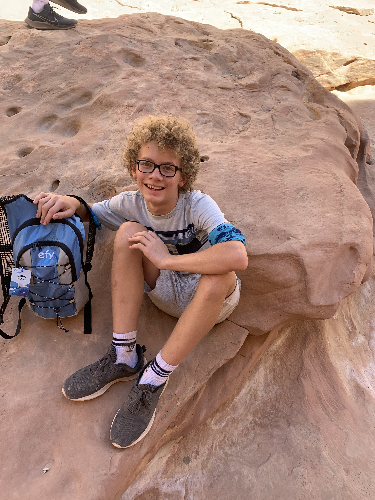

"To be supportive to other people, be well equipped for the job, and get the job done with quality."
liam.f@windsorcharteracademy.org
→ Replace placeholder boxes with <img src="yourfile.jpg"> — add as many as you want
I took the YouScience aptitude assessment, which measures natural strengths that stay stable over time — not just what you've learned, but how your brain is actually wired. Here's what I found out about myself:
Top Aptitudes
I can visualize 3D objects and rotate them mentally — natural fit for design, building, and tech work.
I spot errors and differences fast. My brain automatically picks up on inconsistencies others miss.
I can generate multiple ideas at once without getting overwhelmed. I know when to stop brainstorming and act.
Top Interest Areas (RIASEC)
What I Learned About Myself
The results confirmed a lot of things I already suspected. I work best when I have a long-term goal to aim at — I'm motivated to push through boring requirements if I know there's something meaningful at the end. I'm socially flexible, meaning I can work in groups or alone, but I need solo time to recharge. My spatial visualization score explains why 3D printing, circuit building, and designing things clicks so naturally for me. The investigative interest area matches my instinct to ask "why" and dig until I actually understand something rather than just accepting the surface answer.
Words That Describe Me (from YouScience)
My biggest interests are 3D printing, PC gaming, and building things. I enjoy pushing hardware and software to see what they're capable of — whether that's designing something in a slicer, exploring open-world games, or tinkering with circuits.
My biggest strength is problem solving — specifically finding solutions that other people wouldn't think to try. When something isn't working, I don't just look for the obvious fix; I look for the weird one that actually works. As the quote I live by goes:
"If it looks stupid but works, it ain't stupid."— Trupen
Short Term
Get my first job and start building financial independence.
Long Term
Develop and publish my own game in Python on Steam, and buy my first car.
"If it looks stupid but works, it ain't stupid."— Trupen
This quote matters to me because it reflects how I approach everything — school, tech, gaming, life. Society pushes you to do things the "right" way, but if your weird solution actually works, it wasn't wrong. It's taught me to trust my instincts even when my approach looks unconventional to others.
Thinking Interdependently
This year I improved on working as part of a team, especially through VEX Robotics. Building a robot requires everyone to contribute their part — mechanical, coding, driving — and none of it works if you're not communicating and relying on each other. My internship also pushed this: preparing and repairing Chromebooks for the whole school means my work directly affects students and teachers I may never even meet.
Gathering Data Through All Senses
Working as a tech assistant taught me to pay close attention to what a broken device is actually doing — not just error messages, but sounds, heat, how it physically feels when you handle it. Diagnosing a malfunctioning Chromebook isn't always about reading a screen; sometimes it's about noticing something smells burnt, or that a hinge feels wrong. I've gotten much better at using all available information before jumping to conclusions.
Motivated junior at Windsor Charter Academy seeking a part-time position at a tech retail store. Bringing hands-on experience repairing and maintaining Chromebooks, strong problem-solving skills, and a genuine passion for technology.
Dear Hiring Manager,
I am writing to apply for a part-time position at your tech retail store. As a junior at Windsor Charter Academy with real hands-on experience repairing and maintaining technology, I believe I would be a strong addition to your team.
This year I have been working as an unpaid technology intern at my school, where I prepare and repair Chromebooks for student use. This role has given me practical experience diagnosing hardware and software issues, managing device inventory, and making sure equipment is ready and reliable for the people who depend on it. I take pride in solving problems efficiently — even if my solutions aren't always the conventional ones.
I am passionate about technology in all forms, from 3D printing to PC hardware to software development. I am the kind of person who genuinely enjoys figuring out how things work and helping others when their tech isn't cooperating. Working in a tech retail environment would let me do exactly that while building professional experience in the field I plan to pursue long-term.
I am reliable, quick to learn, and comfortable working with customers and coworkers alike. I was also a member of my school's VEX Robotics team, which taught me how to collaborate under pressure toward a shared goal.
I would love the opportunity to speak with you further about how I can contribute to your team. Thank you for your time and consideration.
I haven't made a firm decision about college yet — and that's okay. My goals are centered around building real skills in technology and game development, whether that happens through a traditional four-year university, a trade or technical program, or self-directed learning and projects. What matters most to me is ending up doing work I care about.
Located in Fort Collins, Colorado — just down the road from Severance. CSU offers a well-regarded Computer Science program with specializations that align with game development, software engineering, and applied computing.
Located right in Windsor/Greeley, Colorado — practically local. Aims is a public community college focused on accessible, affordable education with strong career outcomes.
"The mission of Aims Community College is to provide knowledge and skills to advance quality of life, economic vitality, and overall success of diverse communities."
My long-term career goals are in technology — specifically indie game development and software tools. I'm currently learning Python and plan to build and publish a game on Steam. I'm also interested in 3D printing as both a hobby and a potential small business. My ideal career path involves creating things that people actually find useful, whether that's software, hardware, or something nobody has made yet.
My top 3 RIASEC categories are Investigative, Conventional, and Realistic. Here's what I researched for each one:
Analytical & curious thinking · Problem-solving & research · Science and data-driven work
Career Match: Materials Scientist
Traits That Match Me
Job Outlook
Bachelor's or Master's in Materials Science · 4% growth · Avg. $106,000/yr
What They Actually Do
Set procedures & routines · Detail-oriented · Organized and rule-following
Career Match: Accountant & Auditor
Traits That Match Me
Job Outlook
Bachelor's in Accounting or Finance · 6% growth · Avg. $79,000/yr
What They Actually Do
Hands-on & practical work · Working with tools, machines, or technology · Physical environments
Career Match: Civil Engineer
Traits That Match Me
Job Outlook
Bachelor's in Civil Engineering · 5% growth · Avg. $95,000/yr
What They Actually Do
Sources: mynextmove.org · bls.gov/ooh
As part of the college research process, I completed a "Finding Colleges That Fit" one-pager on Aims Community College.
Aims Community College
Price
$2,760 per year
Admittance
Undergraduate
SAT Scores Required
Reading: 430+ · Math: 460+
Average GPA
Not stated, but higher than 2.0
Top 5 Subjects
Financial Aid
85% of students received financial aid
Why Attend
Very affordable and has a diverse range of subjects.
Why I'm Interested
College is expensive but also rewarding. The career I want doesn't require college at all, so this is a cheap alternative that still has the subjects I'm interested in.